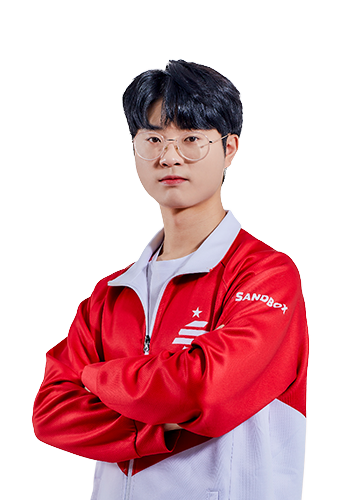

SANDBOX GAMING
SANDBOX GAMING의 멤버로는 박인수, 박현수, 김승태, 정승하가 있다.
박인수 : SPEED ACE / 박현수 : SWEEPER / 김승태 : HYBRID / 정승하 : RUNNER
박인수 : SPEEDACE

박인수는 1998년 11월 26일생으로 경상남도 창원시에서 태어났다.
박인수의 사투리는 너무 매력적이다.
별명으로는 인수분해, 반노스, 샌박인수등이 있다.
우승 : 팀전 2회 우승
박현수 : SWEEPER
박현수는 2001년 4월 24일생으로 인천광역시에서 태어났다.
요즘 방송이 떡상하고 있는 선수이다. 방송의 질은 순한맛이며 개인적으로 너무 재밌다
별명으로는 네모다오, 부빙리타, 악컨현수등이 있다.
우승 : 팀전 1회 우승
김승태 : HYBRID
김승태는 1997년 6월 18일생으로 충청남도 아산시에서 태어났다.
최근 한 술먹방이 너무 재밌었다. 자고 있는 박인수를 깨워 도움을 청했다.
김승태의 별명으로는 슨, 슨상, 엘사, 댄싱머신등이 있다.
안 본 사람은 꼭 김승태의 춤을 보길 바란다.
우승 : 개인전 1회, 팀전 4회 우승
정승하 : RUNNER
정승하는 1999년 12월 17일생으로 서울에서 태어났다.
20 시즌2가 끝나고 집에서 하는 몰컴이 너무 재밌고 짜릿했다.
정승하의 별명으로는 빛승하, 승하브리드 등이 있다.